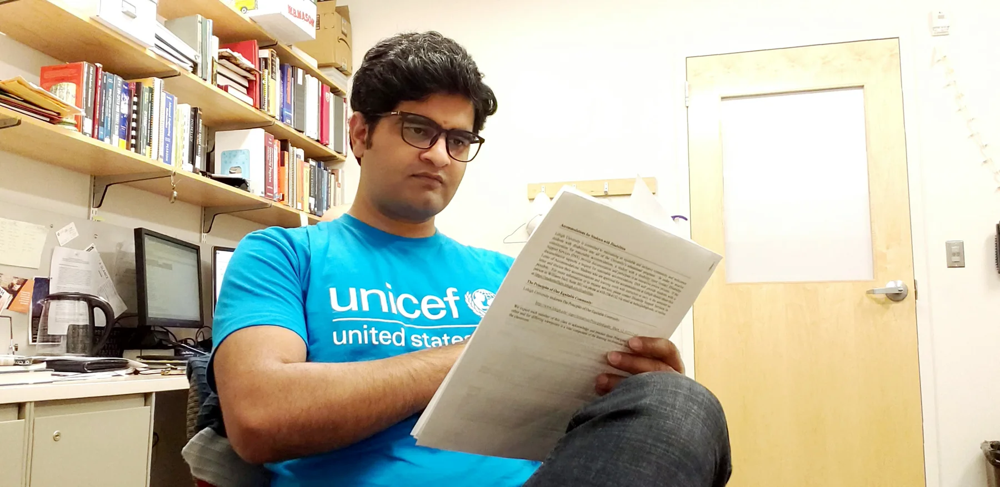
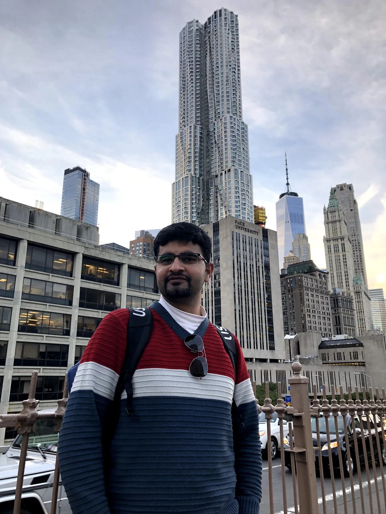
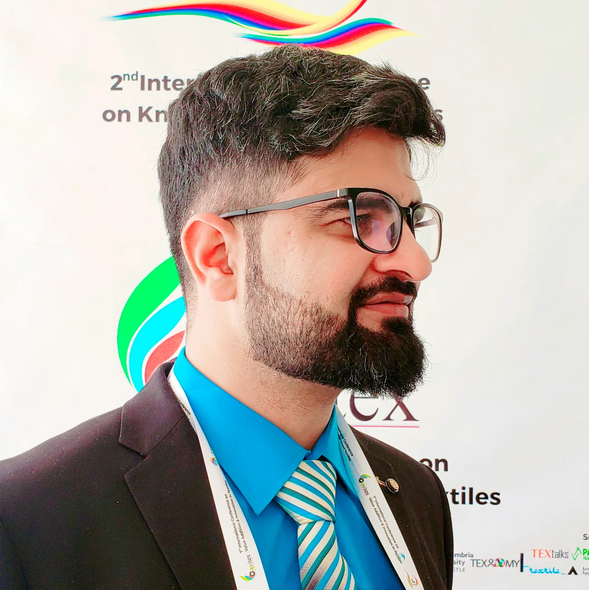
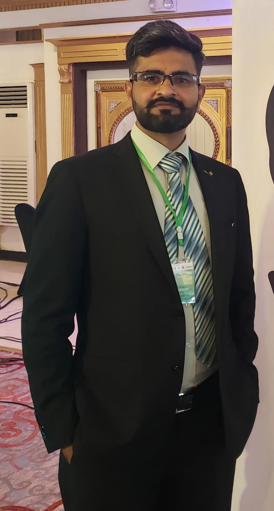

Field notes
Work is also
where it takes you.
Selected moments from conferences, study, public speaking, professional service, and international experience.





Field notes
Selected moments from conferences, study, public speaking, professional service, and international experience.



